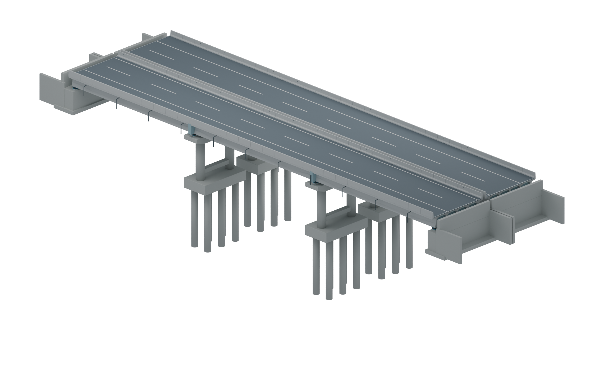
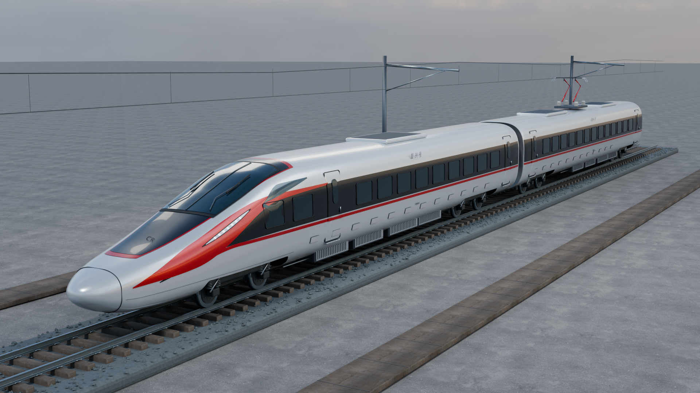
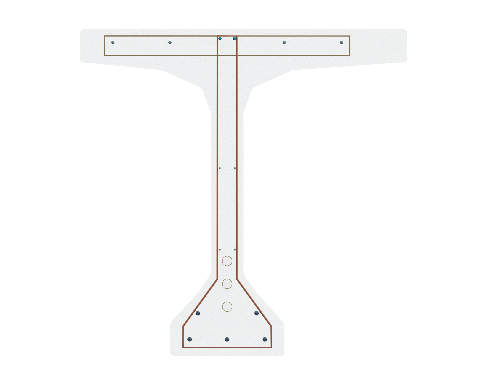

BLENDER · 三维构造观察
换个角度，
看看里面有什么。
选一个模型，旋转、隐藏外层，或把部件拉开。
从整座桥，到车轮，再到梁里的一圈箍筋。


打开以后怎么操作
旋转与靠近拖动旋转，滚轮缩放，右键平移；手机可用双指缩放。
消隐与拆分隐藏挡住视线的构件，或拉开部件；点复位可回到原来的装配位置。
选视角与留图切换侧面、上方和局部视角，点“保存当前视角 PNG”留作讲解用图。
模型、尺寸与使用说明
三维模型来自本项目的 Blender 案例。网页保留模型比例，拆分只改变显示位置，不代表实际装配间距。模型用于教学观察：桥梁的下部结构与配筋含教学布置，列车车头与机械细节为展示近似，列车只有两节，并非完整运营编组。
首次点开时按需读取模型；桥梁约 20 MB，列车原始模型约 37 MB，网页以约 12.2 MB 的无损压缩分块载入。钢筋笼从同一份桥梁模型提取显示。推荐通过此网页链接打开。